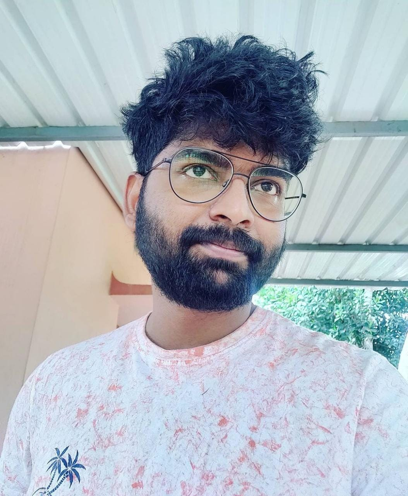
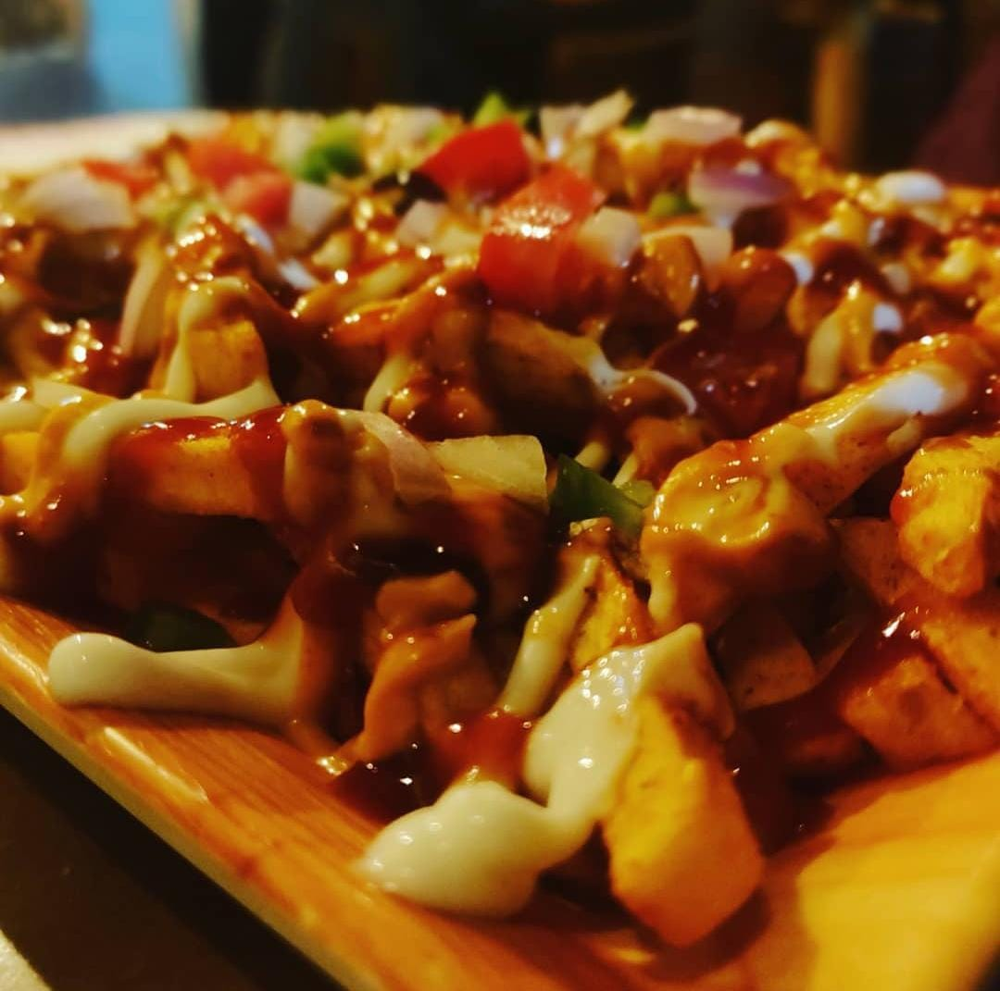
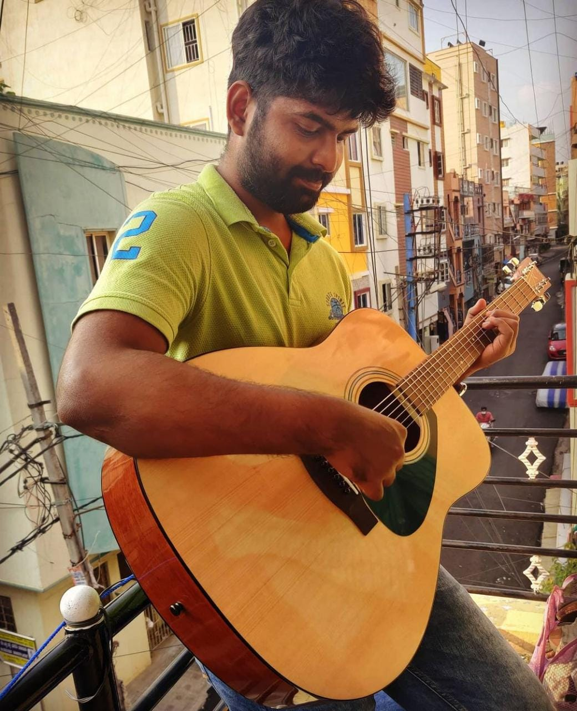
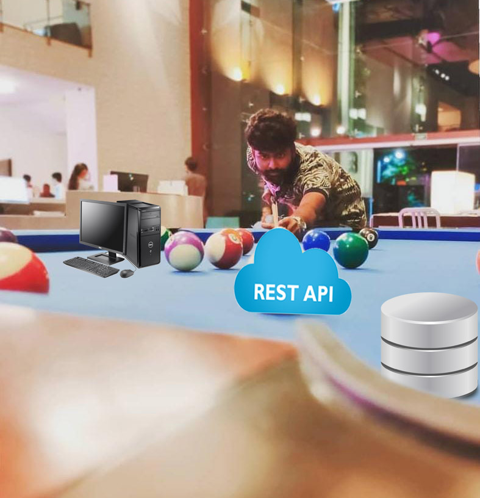
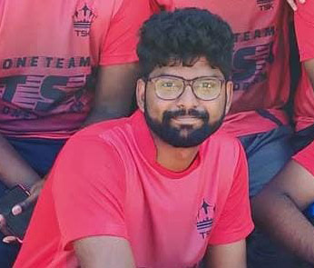

Here's what i do
-

Expert in candid selfie
I enjoy clicking pictures of my own, I'm considered as the master of the art of candid photography, capturing the "decisive moment" in everyday life over a span of several decades.
-

Specialization in Food photography
After honing my craft as a candid shooter , I made the transition to food photography and never looked back. I Keep Exploring few kilometres around I stay for places to pick pick, To keep trying food all Day and then click click. My Fav Food would be of Hot Waffles and Pancake with Maple Syrup.
-

Singer By Passion
I love to sing, When Happy I sing, When Sad I sing, People say my voice is a combination of sheer vulnerability and power, Also the guitar playing is an extension of my voice.
-

API Specialist at Work
I create a wide rage of efficient and in demand REST APIs. Even though it's called REST APIs, I don't rest until i finish creating them.
-

Captain of the TSK Cricket Team
As a captain, I've always lead my Team from the front both with the bat and the ball. To Me, It's not whether you win or lose, it's how you play the game.